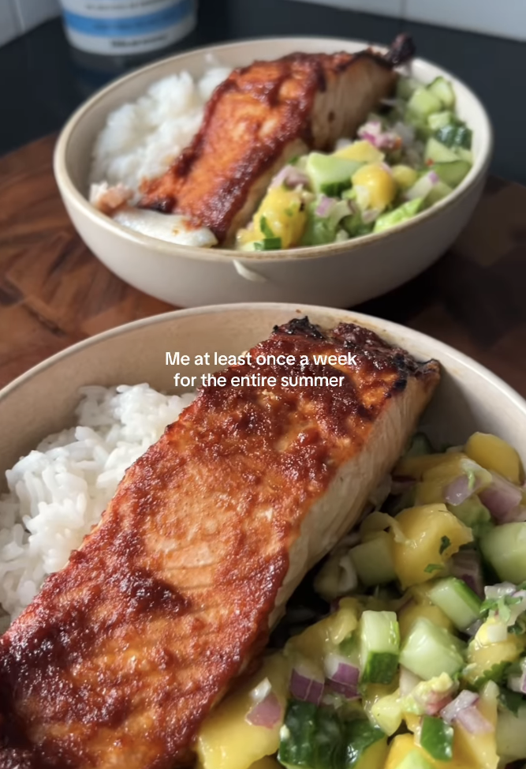

Home
Sweet & Spicy Salmon Bowls
credit:
@soleila_wellness
on Instagram

Ingredients (makes 2 bowls)
- 1 salmon fillet
- 1 tsp sriracha
- 1 tbsp minced garlic
- 1 tsp soy sauce
- 1 tsp smoked paprika
- 1 pinch of salt
- 2 ripe mangos
- 1 red onion
- 1 avocado
- 1 jalapeño
- 1 cucumber
- 1/3 cup chopped coriander
- 1 lime
Instructions
- In a bowl, add diced mangos, cucumber, and avocado
-
Add finely chopped red onion and jalapeño as well as 1/3 cup of chopped
coriander
- Add squeezed lime juice and mix
-
In a different bowl, combine siracha, maple syrup, minced garlic, soy
sauce, paprika, and salt
-
Cut salmon fillet into 2 pieces and place on sheet of aluminum foil
- Spread seasoning over the top of each piece
- Cook salmon in airfryer for 8 minutes at 400 degrees fahrenheit
-
Over a bed of white rice, portion out half of the mango salsa and 1
piece of salmon